Social media management
Komplexná správa, ktorá odbremení tím a nechá vás sústrediť sa na podnikanie.
social media manager / creator & strategist
Pomáham značkám nájsť hlas, ktorý znie prirodzene, a stratégiu, ktorá sa pretaví do reálnych výsledkov.
Pozrieť moju prácuVolám sa Jana. V agentúre som začínala ako social media manager pre pár klientov. Dnes sa ako juniorská marketérka starám o firemné projekty, a radosť mi robí aj spolupráca so skvelými klientmi.
Moja práca nie je len o „pekných príspevkoch“. Zaujíma ma vizuálna identita, stratégia a obsah, ktorý mení náhodných sledovateľov na lojálnych zákazníkov.
Spoznajme sa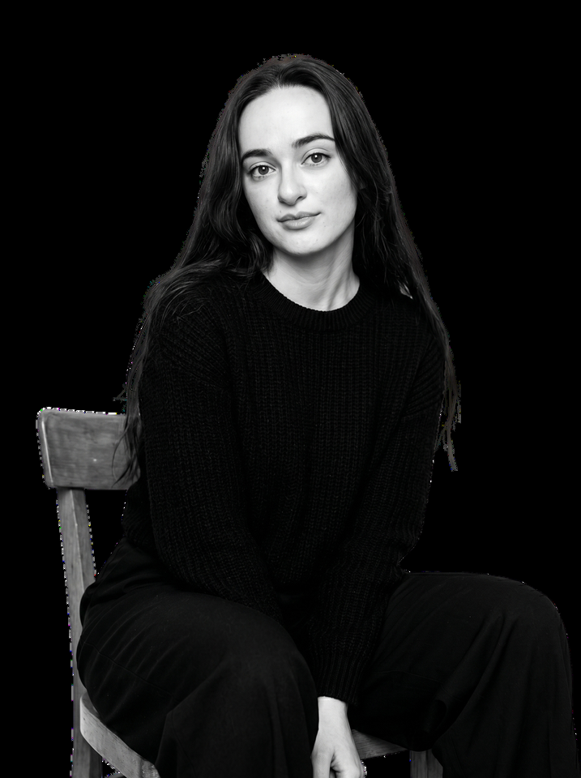
Komplexná správa, ktorá odbremení tím a nechá vás sústrediť sa na podnikanie.
Od fotenia a natáčania cez strih až po copy, ktoré má hlavu, pätu a vedie k akcii.
Recenzie, unboxingy a how-to videá, ktorým ľudia veria.
Za každým výsledkom je rozhodnutie, komu značka hovorí a prečo by jej mal niekto venovať pozornosť.
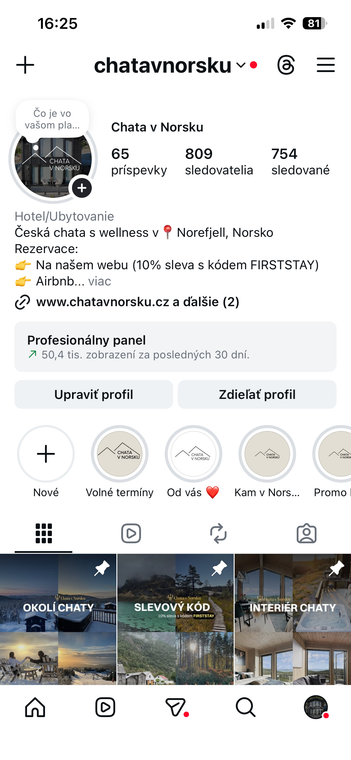
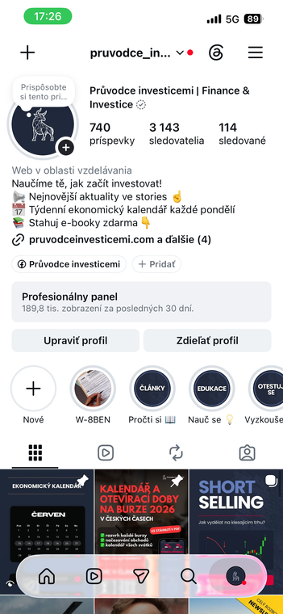
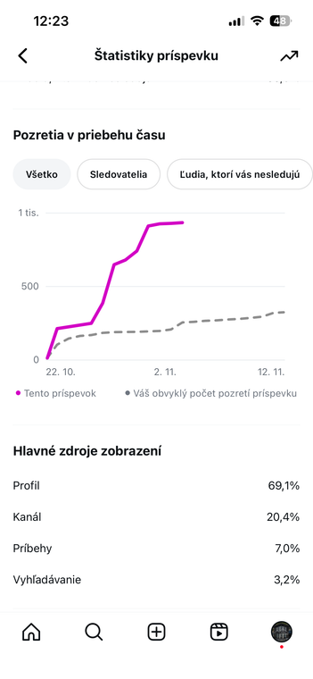
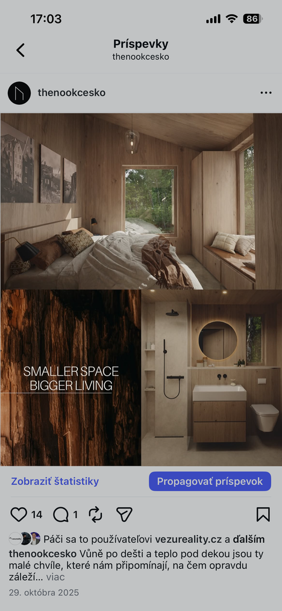
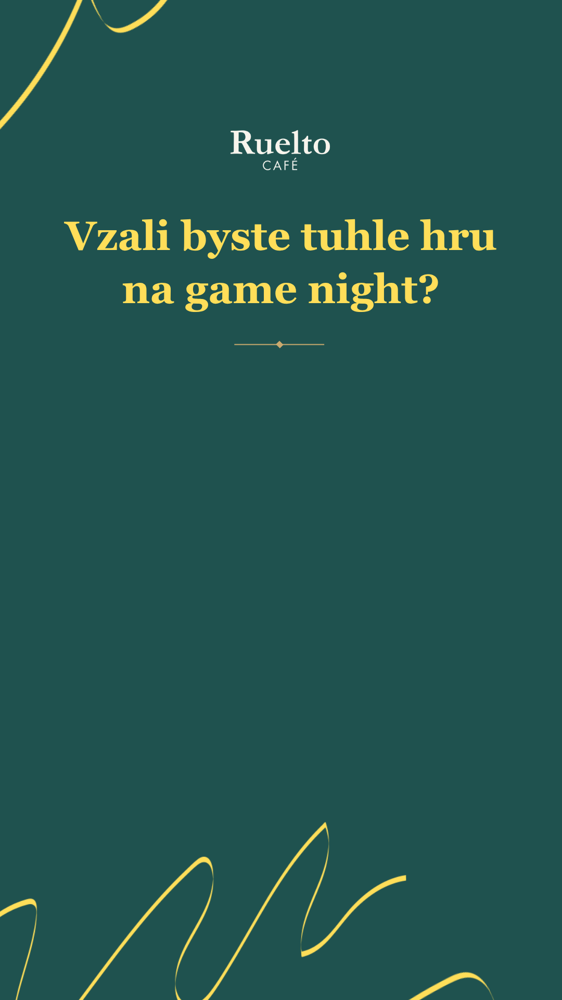
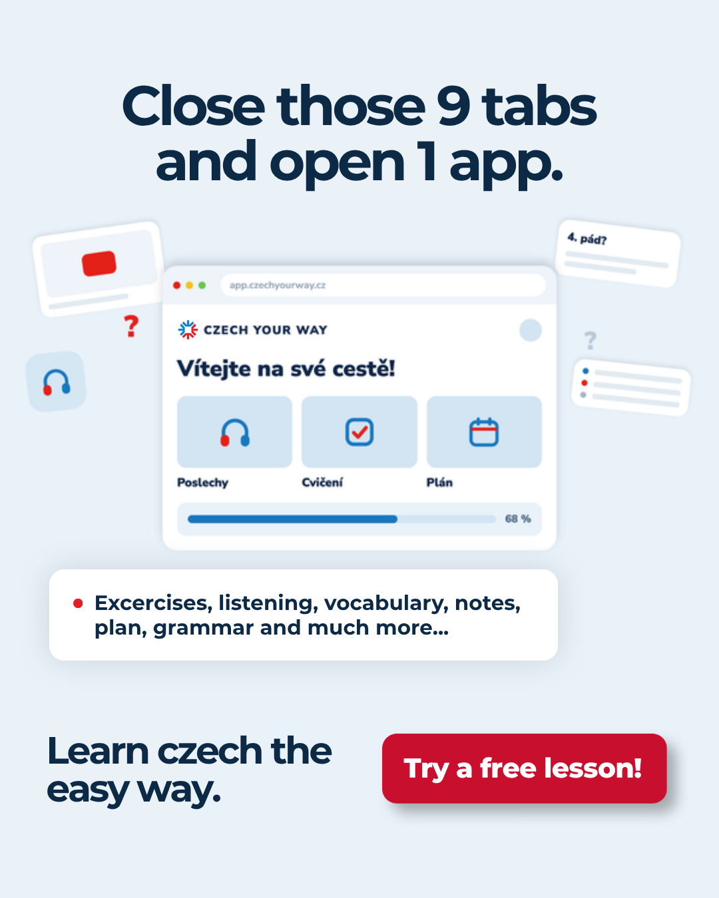
Unboxing, aesthetic, showcase, testimonial aj voiceover. Rozhoduje kontext značky, nie trend sám o sebe.
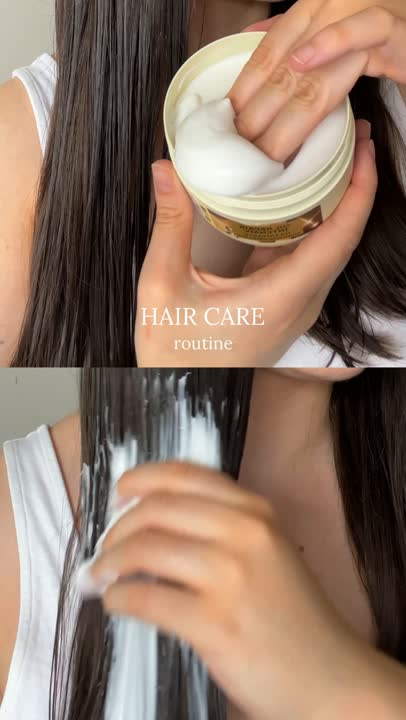
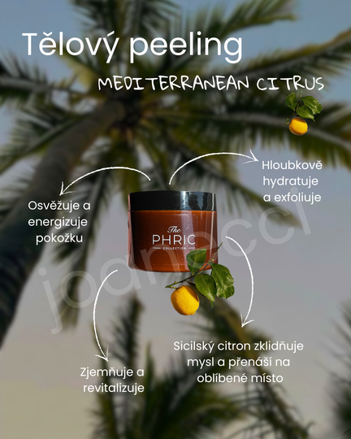
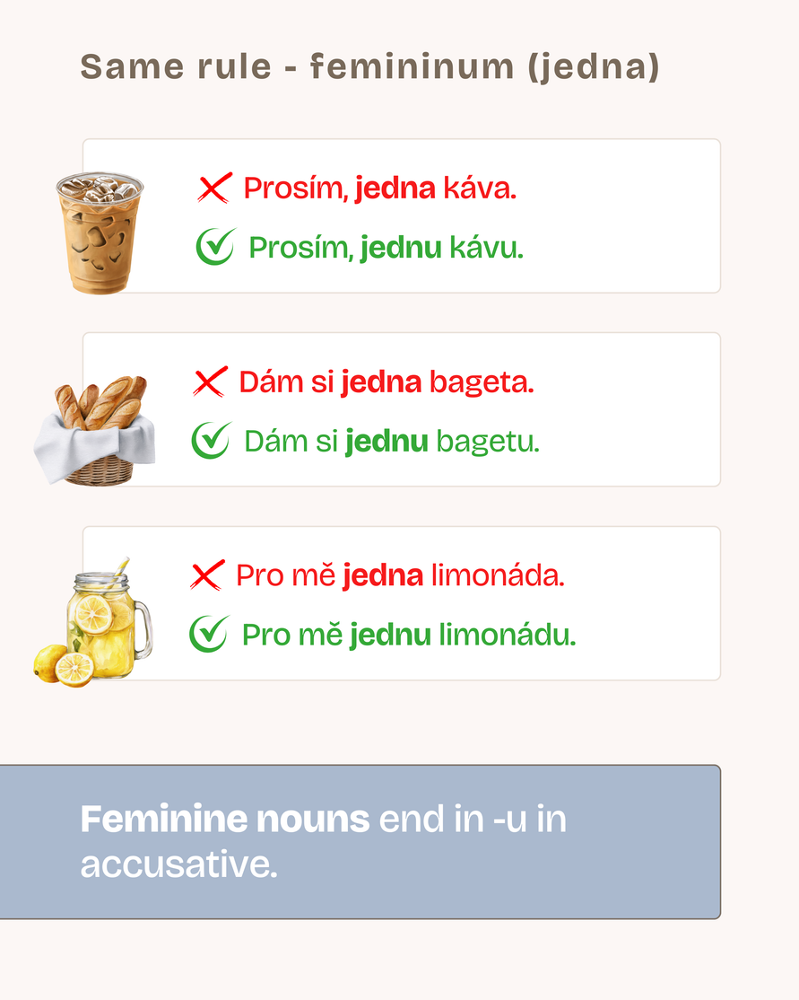
„Jana vie spojiť estetiku s premyslenou stratégiou. Pri spolupráci prináša pokoj, nápady a veci dotiahne.“Monika Hudová / marketingová manažérka
„Je samostatná, kreatívna a vždy premýšľa, ako dať obsahu ďalší zmysel.“Andrea Janoušek Fryk / majiteľka Phric
Posledná zastávka
Zaujala ťa moja práca? Poďme spolu vytvoriť obsah, ktorý rozpráva príbeh.
Napísať Jane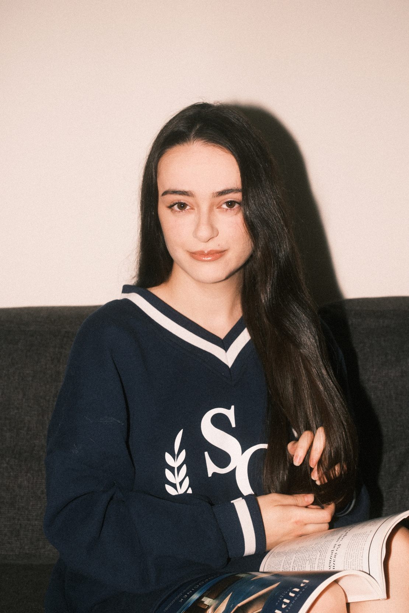